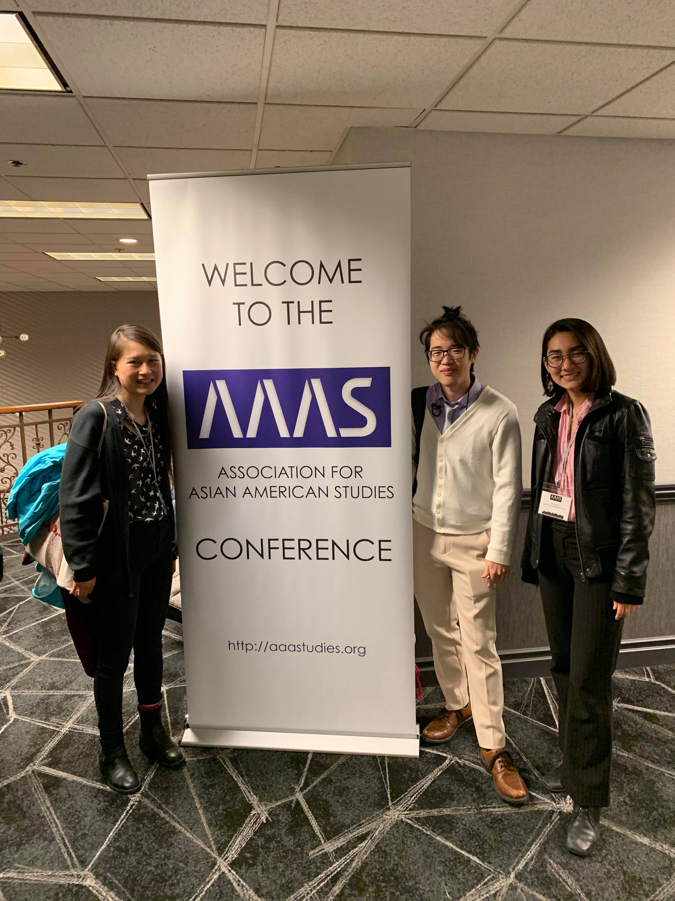

The Vassar Asian American Studies Working Group is a coalition of students working towards the establishment of a substantive Asian American Studies program that is part of the larger field of critical ethnic studies. We seek to build on the work of past Vassar student activists who have been pushing for the introduction of an Asian American Studies program for over forty years.
November CES Conference on the Horizon
Originally planned for November 2020, the Critical Ethnic Studies conference had to be delayed due to the COVID-19 pandemic. VASAM members Joy Freund, Emma Chun, and Tamika Whitenack continued their work from the previous year and have rescheduled the conference to April 2021. It will take place online and planning for this new event has begun.
Archiving Work
Due to the COVID-19 pandemic and lockdown measures in place on Vassar’s campus, VASAM has had a more internal focus this past semester. One of the internal projects that has been taking place is an archiving of VASAM’s work so far, including this website.
Professor Truong Hired
In the spring semester of 2020, Asian Studies Department chair Professor Christopher Bjork approached VASAM with a unique opportunity to contribute to the hiring of a postdoctoral fellow for the fall of 2020. VASAM was a critical part of the hiring process, and eventually Professor Vivian Truong was hired. This fall, she taught Introduction to Asian American Studies, and in the Spring of 2021 she will teach 2 more classes before moving on to Swarthmore College in a tenure track position.

Tenure Track Hiring Process Started
In the Spring of 2020, VASAM assisted the Asian Studies and American Studies departments in submitting a tenure track proposal for an Asian American Studies scholar to come and teach at Vassar. Unlike the proposal in 2019, this one was approved, and this fall members of VASAM have provided input to the hiring process for the new faculty member.
APR 30 Nicole and Sylvia's Misc Article
On April 30, 2020, VASAM founders and members Sylvia Peng and Nicole Kormendi co-wrote a feature for Vassar’s newspaper the Miscellany News about the Asian American Studies courses offered in the fall of 2020 and all of the work and time that went into getting Professor Truong hired at Vassar. Article Link
FEB 23 Oral History Food Event in TA23
On February 23rd, 2020, VASAM hosted an oral history event in TA 23 to talk about the history of VASAM and the importance of Asian American studies in general and on Vassar’s campus. Food was served and both people who had been involved with the org and people who knew nothing about it were invited to come and talk and listen.
Heinz Insu Fenkl, A Visiting Professor
After the semester delay of his visit, Professor Heinz Insu Fenkl (class of 1982) taught 3 Asian American Studies courses at Vassar in the Spring of 2020. The courses were Transnational Korea, Transnational India, and Asian American Graphic Literature. He provided a lot of insight into the history of Asian American studies at Vassar because he was a student here and taught later on in his life.
Fenkl interview with Janet

CLASAM + Showcase
In the Fall of 2019, Vassar had plans in place for Professor Heinz Insu Fenkl to visit and teach three Asian American courses; however, his visit was pushed back a semester and Vassar was left with no Asian American Studies courses for the semester. In response, members of VASAM organized a student-organized, student-taught course titled Activist Academia: An Asian American Studies Approach to Power Analysis. Different students taught classes in areas of their interest related to Asian American Studies across 8 weeks and the course culminated in an optional final project which was presented at a showcase held in the Rose Parlor.

Pre-Org Status
VASAM applied for pre-organization status under the Vassar Student Association and was originally denied. After challenging the decision VASAM was instituted as a pre-organization which was a necessary step to becoming a full organization at Vassar. This step helps to create institutional memory of the voices of student activists and the work VASAM has done.
APR 25-27AAAS Conference
Tamika Whitenack, Jonan Kiang, and Nicole Kormendi attended the three-day Association for Asian American Studies conference (AAAS Conference). At the conference, they were able to learn more about the intersectionality and interdisciplinary nature of Asian American studies with other fields like disability studies, environmental studies, and refugee studies. The experience also highlighted the duality of activism in academia in both creating institutional memory while striving to build more inclusive spaces.
APR 18Envisioning Horizons (Panel)
On April 18, 2019 VASAM hosted the panel Envisioning Horizons: The Future of Ethic Studies in Vassar College Sanders Auditorium (co-sponsored by the ALANA Center). The panel was moderated by Joy Freund and Sandra Yu with guest speakers: Chris Eng (Assistant Professor of English at Syracuse University), Eve Dunbar (Associate Professor of English at Vassar), and Hiram Perez (Associate Professor of English and Director of Women’s Studies at Vassar) who discussed the status of ethnic studies at Vassar and how they envision the future of the field developing. Article Link
MAR 22UPenn Conference
Gabor, Nicole, Joy, Johnson, Tammy, Sandra -- FB group chat with thoughts, check agendas for debriefs. Listened to other school’s perspectives as attendees, more about presentation than discussion, didn’t have much chance to interact with other schools. Presentation about Desi American studies/SAAM Studies, presentation from Duke (ASAM studies breakthrough that year), multiracial presentation, ASAM studies at the Ivys (Harvard rep)
Library Display -
VASAM Book Library
Carina Leung organized VASAM’s display that went up in Vassar College’s library. The project showcased works about the Asian American experience and by Asian American authors. The novels covered a wide array of stories representing the diverse experiences within the Asian diaspora. This project became the VASAM mini-library in the ALANA Center (Vassar’s center for racial/ethnic diversity).

Poster Campaign
VASAM launched a poster campaign (VASAM40) to bring awareness to the lack of Asian American studies at Vassar. The number 40 comes from 2019 being the 40th year since Vassar students had first demanded Asian American Studies being incorporated into the curriculums at the college. The campaign consisted of a series of graphics designed by VASAM members detailing the failure of Vassar to provide a comprehensive Asian American Studies program as well as the motivation for forming and goals of VASAM.
NOV 30Gary Okihiro
VASAM invited Gary Okihiro to come give a talk on the Third World Movements & Asian American Studies on Friday, November 30th in 2018. Professor Okihiro gave a formal talk about his work advocating for Asian American Studies and the historical events of the Third World Movement including how it fits into the greater global context. He also sat down to do a more informal Q&A session with students and faculty.

NOV 12Hua Hsu Talk
On November 12, 2018, VASAM organized a talk from Professor Hua Hsu called Evolving Politics of Asian American Representation discussing his work in Asian American Studies. He discussed the history of Asian American Studies and Ethnic Studies coming out of California student protests in the 1960s, representation of Asian Americans in the media, and the role of literature in identity.

MAY 3Panel
On May 3, 2018 VASAM held their first Panel on Asian American Studies and Ethnic Studies with panelist Nicole Kormendi, Megan Wang, Professor Long Bui, Professor Justin Patch, Professor Jasmine Syedullah, and Charles Kim. VASAM students Sylvia Peng and Tamika Whitenack moderated the panel. The goal of the panel was to bring more awareness to the movement, learn more about (institutional) history, and understand the role of student-led movements in the past.
FEB 21 VC Calls For Asian American Dept.
Mary Retta, a student at Vassar, wrote an article about VASAM and their efforts in the Miscellany News (Vassar’s student-run newspaper). The article contained remarks from students active in VASAM as well as faculty and Vassar’s President, Elizabeth Bradley. Students explained their motivation for supporting and being involved in VASAM as well as the frustrations they experienced from the work. The faculty and President expressed their reactions to the formation of the group and difficulty of balancing their position and their interest in teaching Asian American studies courses. Article Link
Kenji's Video Project
Kenji Nikaido created a video project interviewing people involved with VASAM or interested in Asian American studies to understand why VASAM was formed and the importance of this movement. The videos asked about people’s personal experiences growing up, the importance of seeing themselves represented in academia, and more about the structure of VASAM. Kenji’s project also expanded on how fighting for Asian American studies tied into expanding critical ethnic studies as a whole. Link to Interviews

Poster Campaign
VASAM students had their first poster campaign to bring awareness to the lack of Asian American Studies in Vassar’s curriculum. Black-and-white posters saying “Vassar Has No Asian American Studies Program” were placed around campus to highlight the exclusion Asian American students experienced in academia. VASAM also created a photo series based on the UPenn “I wish UPenn taught me…” and Duke University “Duke doesn’t teach me…” #ASiAM campaigns where students posed with signs with statements starting with “Vassar teaches me…” followed by statements commenting on the exclusion of Asian Americans from academia.

NOVVASAM Founded November 2017
In November of 2017, a group of Vassar students gathered together in the Noyes House Jetson lounge for the first meeting of the group that would become VASAM. Students realized Vassar would not teach the history and academic analysis of Asian Americans and their experiences unless demanded by students. Hoping to build on the work demanding Asian American studies at Vassar, a cry dating 40 years back, VASAM seeks to bring Asian Americans into the curriculums taught at Vassar and achieve greater Asian American representation.